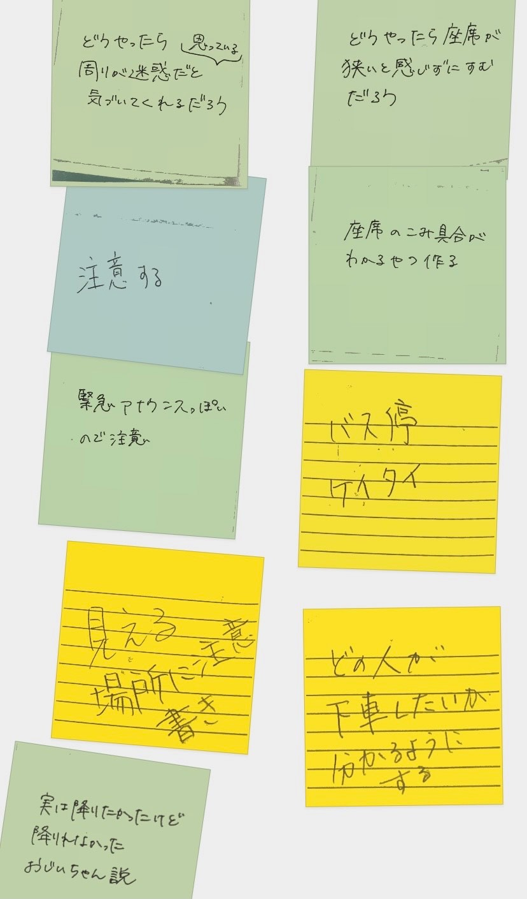
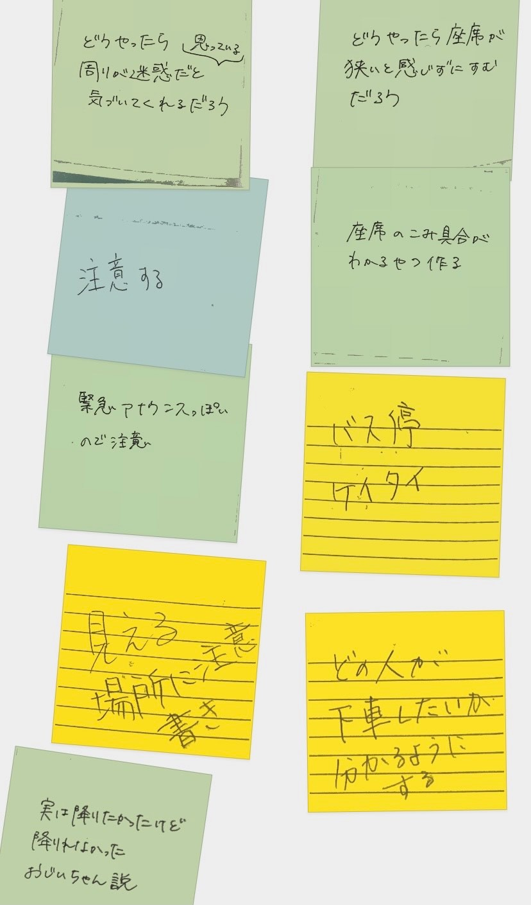

1.グループで選んだ対象
バスの後方にある二人掛けの席に座っていた、軽装のおじいさんを対象とした。
そのおじいさんは、奥の窓側の席が空席のままで、特に荷物等を空いた座席に置くわけでもなく、手前の通路側の席にずっと座っていた。
※その時のバス内の込み状況としては、なかなか混んでいたようだ。
そのおじいさんは、奥の窓側の席が空席のままで、特に荷物等を空いた座席に置くわけでもなく、手前の通路側の席にずっと座っていた。
※その時のバス内の込み状況としては、なかなか混んでいたようだ。
2.POVのスケッチの写真と説明


私は④の「周りが迷惑に思っていることに気づく必要がある。」に注目した。
本人に直接注意するというのはかなりハードルが高いので、それとなく相手に伝える方法はないか考えた。
3.HMWの写真
※付箋アプリのスクリーンショットで申し訳ないです。


4.構想段階の手書きスケッチ
「座りたいんだ！！」という意思を周りの人にそれとなく伝えれるような、鞄などに着けられるタグのようなものを考えた。
「座りたい」とは別に、「あと一駅だし立っていよう」等、座りたくない人に向けてのモノも作った。
「座りたい」とは別に、「あと一駅だし立っていよう」等、座りたくない人に向けてのモノも作った。
5.プロトタイプ画像
スケッチ通りの一言だけのデザインはつまらないと思い、「座りたい」や「立ってたい」が模様に見えるくらいできるだけたくさん入れてみた。
※本当は全て切り抜いたデザイン想定だったのですが、そこら辺の調整は時間が足りずできませんでした。
※本当は全て切り抜いたデザイン想定だったのですが、そこら辺の調整は時間が足りずできませんでした。
「席譲ろう」とまではならなくても、「席、詰めてあげよう」という気持ちくらいにはなりませんか！？
6.設計ファイル
アプリ「ibisPaint」を使用し、設計図のpng画像を作成しました。


未完成のモノ
時間が足りず製作できていない、別のデザインの設計図（製作完了次第、完成写真上げる予定です。）